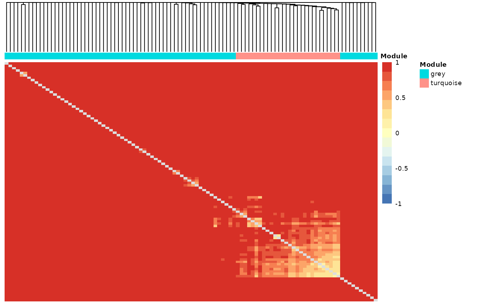
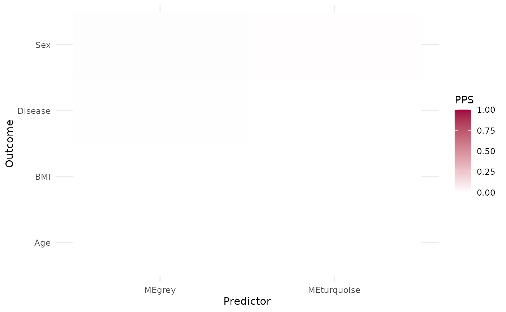
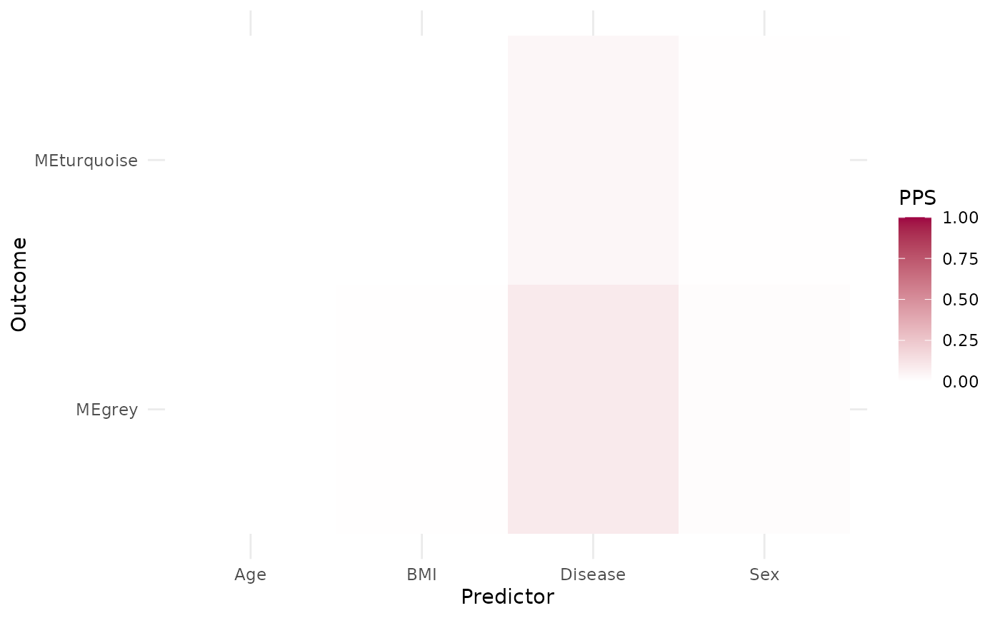
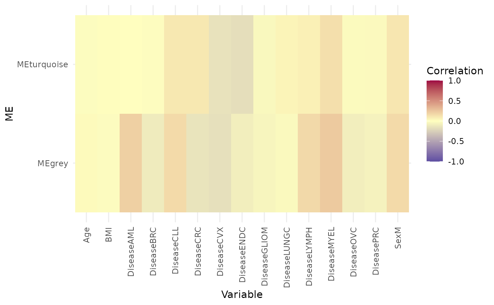
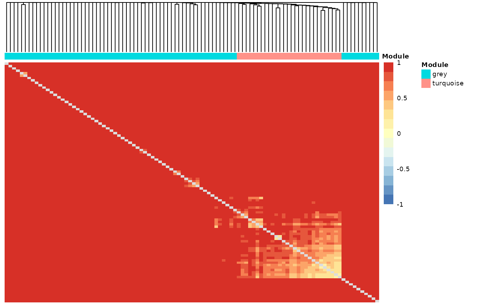
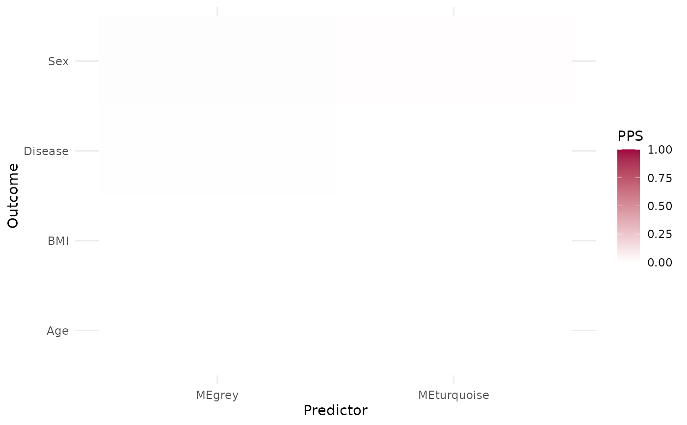
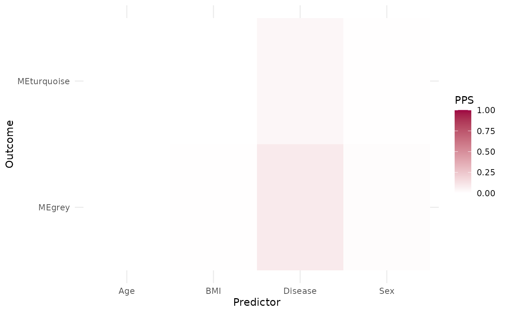
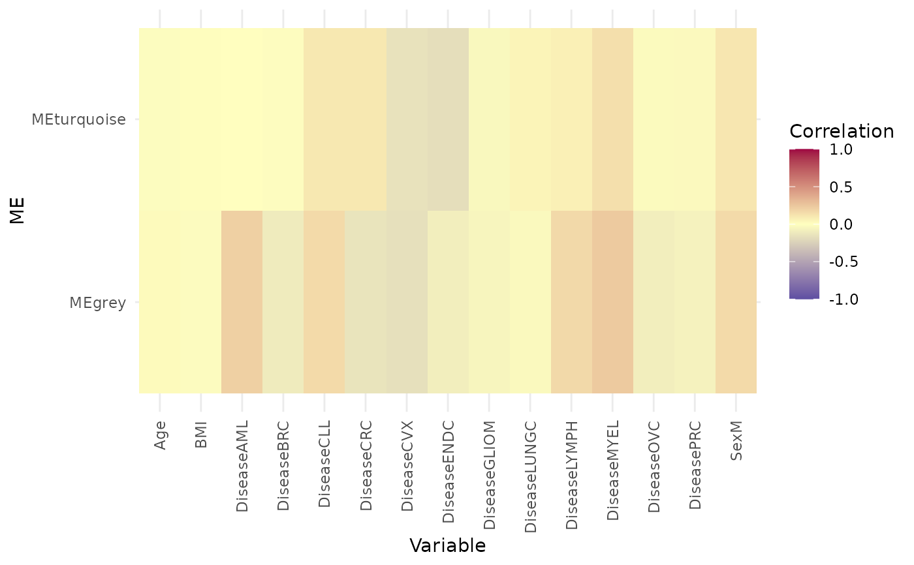

hd_plot_wgcna() generates useful visualizations for the results of the WGCNA analysis.
The function generates a heatmap of proteins and their adjacency, a heatmap of module
eigengene (MEs) adjacency, heatmaps of predictive power score (PPS) between MEs and
metadata and the dendrogram of all genes.
Arguments
- dat
An HDAnalyzeR object or a dataset in wide format and sample ID as its first column.
- metadata
A dataset containing the metadata information with the sample ID as the first column. If a HDAnalyzeR object is provided, this parameter is not needed.
- wgcna
The WGCNA analysis results obtained from
hd_wgcna().- clinical_vars
A character vector containing the names of the clinical variables to be used in the predictive power score analysis.
Examples
# Initialize an HDAnalyzeR object
hd_object <- hd_initialize(example_data, example_metadata)
# Perform WGCNA analysis
wgcna_res <- hd_wgcna(hd_object)
#> Warning: executing %dopar% sequentially: no parallel backend registered
#> Power SFT.R.sq slope truncated.R.sq mean.k. median.k. max.k.
#> 1 1 0.5100 -0.742 0.7080 1.17e+01 1.07e+01 24.50000
#> 2 2 0.7400 -0.863 0.7370 2.90e+00 1.86e+00 9.47000
#> 3 3 0.8020 -0.876 0.8210 1.08e+00 3.88e-01 5.11000
#> 4 4 0.8300 -0.882 0.8000 4.92e-01 1.11e-01 3.00000
#> 5 5 0.8660 -0.947 0.8340 2.51e-01 3.05e-02 1.86000
#> 6 6 0.0873 -1.240 -0.1180 1.37e-01 9.13e-03 1.19000
#> 7 7 0.8570 -0.979 0.8460 7.87e-02 2.87e-03 0.78100
#> 8 8 0.2060 -1.870 0.0826 4.67e-02 9.18e-04 0.52100
#> 9 9 0.2080 -1.830 0.0607 2.85e-02 3.02e-04 0.35300
#> 10 10 0.1050 -1.250 -0.0824 1.78e-02 1.01e-04 0.24200
#> 11 12 0.0828 -1.550 -0.0219 7.34e-03 1.18e-05 0.11700
#> 12 14 0.1170 -1.750 -0.0305 3.23e-03 1.50e-06 0.05900
#> 13 16 0.0681 -1.520 0.0990 1.50e-03 1.98e-07 0.03040
#> 14 18 0.1030 -1.740 0.0846 7.24e-04 2.50e-08 0.01600
#> 15 20 0.1090 -1.720 0.0970 3.62e-04 3.22e-09 0.00853
#> mergeCloseModules: less than two proper modules.
#> ..color levels are grey, turquoise
#> ..there is nothing to merge.
# Plot WGCNA results
wgcna_res <- hd_plot_wgcna(hd_object,
wgcna = wgcna_res,
clinical_vars = c("Disease", "Sex", "Age", "BMI"))
#> TOM calculation: adjacency..
#> ..will not use multithreading.
#> Fraction of slow calculations: 0.000000
#> ..connectivity..
#> ..matrix multiplication (system BLAS)..
#> ..normalization..
#> ..done.
 # Access the plots
wgcna_res$tom_heatmap

wgcna_res$me_adjacency
wgcna_res$pps
#> # A tibble: 16 × 11
#> x y result_type pps metric baseline_score model_score cv_folds
#> <chr> <chr> <chr> <dbl> <chr> <dbl> <dbl> <dbl>
#> 1 MEturq… Dise… predictive… 0 F1_we… 0.0834 0.0338 5
#> 2 MEturq… Sex predictive… 6.85e- 3 F1_we… 0.534 0.411 5
#> 3 MEturq… Age predictive… 0 MAE 12.9 13.0 5
#> 4 MEturq… BMI predictive… 2.22e-16 MAE 3.74 3.78 5
#> 5 MEgrey Dise… predictive… 6.19e- 3 F1_we… 0.0834 0.0474 5
#> 6 MEgrey Sex predictive… 8.20e- 3 F1_we… 0.534 0.436 5
#> 7 MEgrey Age predictive… 0 MAE 12.9 13.0 5
#> 8 MEgrey BMI predictive… 1.11e-16 MAE 3.74 3.81 5
#> 9 Disease MEtu… predictive… 3.89e- 2 MAE 0.0335 0.0322 5
#> 10 Disease MEgr… predictive… 8.97e- 2 MAE 0.0312 0.0284 5
#> 11 Sex MEtu… predictive… 3.72e- 3 MAE 0.0335 0.0335 5
#> 12 Sex MEgr… predictive… 1.25e- 2 MAE 0.0312 0.0310 5
#> 13 Age MEtu… predictive… 0 MAE 0.0335 0.0336 5
#> 14 Age MEgr… predictive… 0 MAE 0.0312 0.0314 5
#> 15 BMI MEtu… predictive… 0 MAE 0.0335 0.0336 5
#> 16 BMI MEgr… predictive… 4.49e- 3 MAE 0.0312 0.0318 5
#> # ℹ 3 more variables: seed <dbl>, algorithm <chr>, model_type <chr>
wgcna_res$me_pps_heatmap

wgcna_res$var_pps_heatmap

wgcna_res$me_cor_heatmap

wgcna_res$dendrogram
# Access the plots
wgcna_res$tom_heatmap

wgcna_res$me_adjacency
wgcna_res$pps
#> # A tibble: 16 × 11
#> x y result_type pps metric baseline_score model_score cv_folds
#> <chr> <chr> <chr> <dbl> <chr> <dbl> <dbl> <dbl>
#> 1 MEturq… Dise… predictive… 0 F1_we… 0.0834 0.0338 5
#> 2 MEturq… Sex predictive… 6.85e- 3 F1_we… 0.534 0.411 5
#> 3 MEturq… Age predictive… 0 MAE 12.9 13.0 5
#> 4 MEturq… BMI predictive… 2.22e-16 MAE 3.74 3.78 5
#> 5 MEgrey Dise… predictive… 6.19e- 3 F1_we… 0.0834 0.0474 5
#> 6 MEgrey Sex predictive… 8.20e- 3 F1_we… 0.534 0.436 5
#> 7 MEgrey Age predictive… 0 MAE 12.9 13.0 5
#> 8 MEgrey BMI predictive… 1.11e-16 MAE 3.74 3.81 5
#> 9 Disease MEtu… predictive… 3.89e- 2 MAE 0.0335 0.0322 5
#> 10 Disease MEgr… predictive… 8.97e- 2 MAE 0.0312 0.0284 5
#> 11 Sex MEtu… predictive… 3.72e- 3 MAE 0.0335 0.0335 5
#> 12 Sex MEgr… predictive… 1.25e- 2 MAE 0.0312 0.0310 5
#> 13 Age MEtu… predictive… 0 MAE 0.0335 0.0336 5
#> 14 Age MEgr… predictive… 0 MAE 0.0312 0.0314 5
#> 15 BMI MEtu… predictive… 0 MAE 0.0335 0.0336 5
#> 16 BMI MEgr… predictive… 4.49e- 3 MAE 0.0312 0.0318 5
#> # ℹ 3 more variables: seed <dbl>, algorithm <chr>, model_type <chr>
wgcna_res$me_pps_heatmap

wgcna_res$var_pps_heatmap

wgcna_res$me_cor_heatmap

wgcna_res$dendrogram